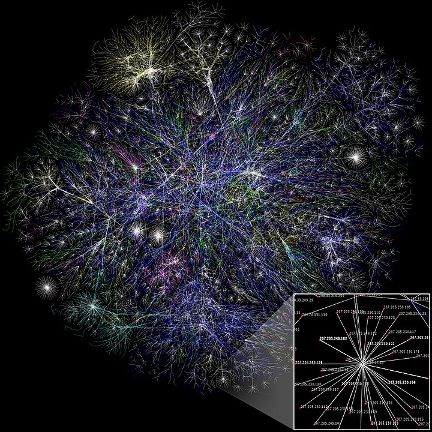

Sve što trebate znati jeste da je ovaj site napravljen u veoma kratkom roku.
Veb-sajt ili veb-lokacija predstavlja mesto na internetu.To je skup veb-stranica
koje mogu da sadrže tekst, slike, video-snimke i drugi multimedijalan sadržaj sastavljen u jednu celinu. Sajt može biti na lokalnom računaru ili na internet
Prikaz internet puteva
